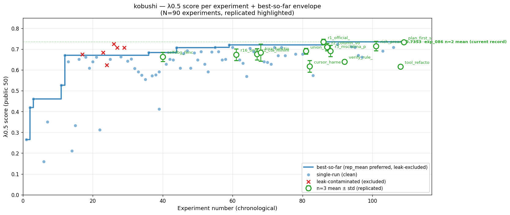
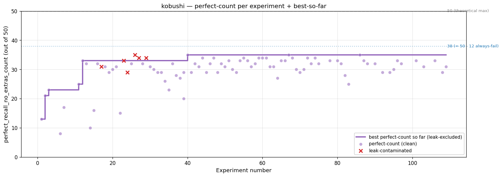

best 3-att union (n=N)
—
—
best single-att (n=N)
—
—
latest LB
—
—
experiments
—
— with n≥3
Best-so-far λ0.5 progress

Perfect-recall progress

📋 Leaderboard submissions
| ver | exp | local n=N | LB | rank | gap |
|---|
🏆 Top experiments by n=N mean
| exp | n | mean | std | missing |
|---|
🕒 Recent experiments (latest 15)
| exp | runs | 1-run | n=N mean | missing |
|---|